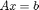

A minimalist example of the MueMat interface
This example solves a linear system  using the default parameters of MueMat.
See also: Tutorial, DefaultParameters, Laplace1D
Contents
Header
clear all;
mue_include;
Setup the multigrid Solver
Amat = gallery('poisson',30); % The test matrix % Create a multigrid solver with default parameters mySolver = Hierarchy(Amat); mySolver.SetOutputLevel(1); status = mySolver.FillHierarchy(); mySolver.SetSmoothers();
Hierarchy: start level = 1 Hierarchy: maximum #levels = 10 Aggregating 1 ......... condest(P'P) = 4.86e+00 condest(P'AP) = 7.17e+01 Aggregating 1 . condest(P'P) = 1.56e+01 condest(P'AP) = 6.52e+00 Hierarchy: start level = 1 Hierarchy: maximum #levels = 3 (level 1) GaussSeidel: sweeps=1, omega=1, symmetric mode (level 2) GaussSeidel: sweeps=1, omega=1, symmetric mode
Generate a random right-hand side ('b')
'srand' initializes the random number generator to ensure reproducible results
srand; n = size(Amat,1); b = rand(n,1);
Solve Ax=b (AMG used directly as a solver)
A fixed number of iterations is performed
nIts = 9; disp(norm(b)) fprintf('Solving Ax=b with multigrid...\n\n'); x = mySolver.Iterate(b, nIts); fprintf('\n||r_0|| / ||r_final|| = %g\n\n',norm(b-Amat*x)/norm(b));
17.0597 Solving Ax=b with multigrid... 1: ||r||=1.362314e+01 2: ||r||=2.636156e+00 3: ||r||=6.517465e-01 4: ||r||=1.673453e-01 5: ||r||=4.287978e-02 6: ||r||=1.089642e-02 7: ||r||=2.750012e-03 8: ||r||=6.908268e-04 9: ||r||=1.730329e-04 ||r_0|| / ||r_final|| = 3.85194e-06
Solve Ax=b (AMG as a preconditioner of an iterative method)
maxIts = nIts; tol = 1e-8; mySolver.SetOutputLevel(0); fprintf('Solving Ax=b again with conjugate gradients preconditioned by multigrid...\n\n'); [x,flag,relres,iter,resvec] = ... % pcg() is the Matlab conjugate gradients method. pcg( ... % Amat, b, ... % parameters: * Matrix and right-hand side tol, maxIts, ... % * Conjugate Gradient parameters @(v)mySolver.Iterate(v, 1) ... % * AMG Preconditioner ); for ii=1:length(resvec), fprintf(' %d: ||r||=%g\n',ii,resvec(ii)); end fprintf('\n||r_0|| / ||r_final|| = %g\n\n',norm(b-Amat*x)/norm(b));
Solving Ax=b again with conjugate gradients preconditioned by multigrid... 1: ||r||=17.0597 2: ||r||=6.98341 3: ||r||=0.883808 4: ||r||=0.0378003 5: ||r||=0.00264464 6: ||r||=0.000195799 7: ||r||=1.22541e-05 8: ||r||=6.97385e-07 9: ||r||=3.55132e-08 ||r_0|| / ||r_final|| = 2.0817e-09